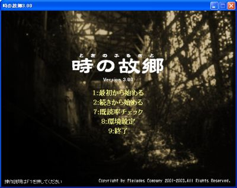
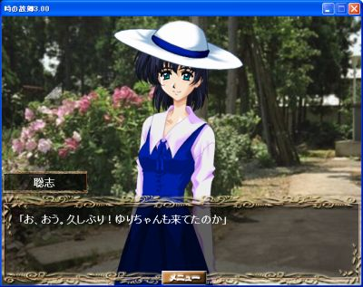
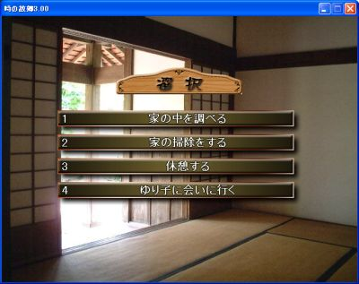
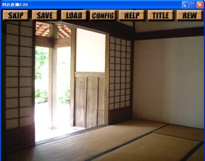
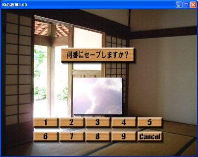
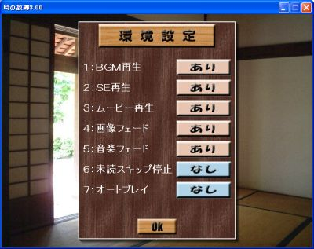
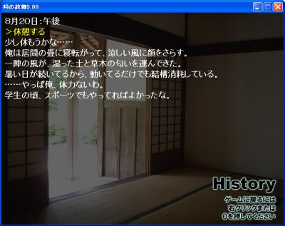

 | タイトル画面 ゲームを開始した直後の画面です。 次のメニューの中から、いずれかを選んでクリックします。 ・最初から始める …ゲームを初期状態から開始します。 ・続きから始める …途中からゲームを再開します。 ・操作説明 …このヘルプ画面を表示します。 ・終了 …ゲームウインドゥを閉じます。 |
 | メッセージ画面 ゲーム中は、基本的にこの画面スタイルで進行します。 画面下部に表示されるメッセージを読み、物語を進めていきます。 メッセージを進める …画面上のどこかをクリックします。 メッセージを一時的に隠す …マウスカーソルをウインドゥ外に出します。 ウインドゥ内にカーソルが戻ると元に戻ります。 メニューを開く …マウスカーソルを画面上部に移動させます。 メッセージを読み返す …マウスホイールを上に回転させます。 |
 | 選択場面 ゲームを進行させてゆくと、選択肢が表示されることがあります。 主人公であるあなたが、行動を決定してください。 選択肢の決定 ……選択肢をクリック メッセージを読み返す …マウスホイールを上に回転させます。 メッセージを一時的に隠す …スペースキーor「．」キーを押す。 ※選択肢が表示されているときは、メニューを開くことはできません。よって、セーブ・ロードは選択肢では行なえません。 |
 | メニュー画面 さまざまな補助機能を使うことができます。 SKIP …次の選択肢まで、メッセージを読み飛ばします。 SAVE …ゲームデータを保存します。 LOAD …保存したところからゲームを再開します。 CONFIG …環境設定メニューを表示します。 HELP …このヘルプ画面を表示します。 TITLE …タイトル画面に戻ります。 REW …テキスト読み返し画面を出します。 メニュー画面からゲームに戻るには、マウスカーソルを画面上部から離すだけでＯＫです。 |
 | セーブ・ロード画面 数字ボタンをクリック …データをセーブ（ロード）します。 Cancelボタン …セーブ（ロード）操作をとりやめます。 マウスカーソルを番号に重ねると、セーブした場面が真ん中に表示されます。 ※セーブしたことのない番号からロードすることはできません。 |
 | 環境設定画面 以下の設定を、クリックするごとに切り替えることができます。 音楽あり／なし ＳＥあり／なし ムービー再生あり／なし 画像フェード（エフェクト）あり／なし 音楽フェードあり／なし 未読スキップ停止する／しない オートプレイあり／なし Okeyボタンをクリックするか右クリックで環境設定を終了します。 |
 | 読み返し画面 ゲーム中の文章を読み返すことができます。 マウスホイールの上下、またはカーソルキーの上下、PageUp/PageDownキーでページをスクロールさせることができます。 マウスの右クリック、「０」キー入力でゲームに戻ります。 |